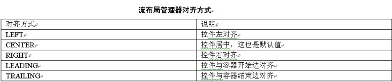
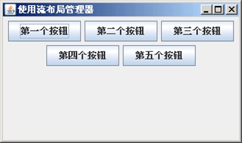
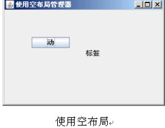
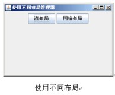
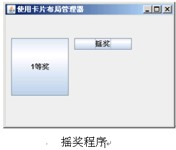

在日常生活中，超市已经变为一个必不可少的基础设施。在超市中，所有的商品都被超市管理人员有条理的分好类，摆在指定的位置，日常用品放在一起，食品放在一起。在Java Swing界面开发中，就用到了超市原理。其中窗体就好像一个超市，窗体中的控件就好像是商品，而布局管理器就是超市的管理人员。在Swing编程中使用布局管理器能够非常有效地对容器中的控件进行有条理并且美观的摆放。布局管理器也是有很多种的，包括流布局、网格布局、边框布局和空布局等，在本章中就来学习这些布局管理器。通过本章的学习，同学们应该完成如下几个目标。
- 了解各种布局管理器的样式。
- 掌握每一种布局管理器的使用。
15.1 流布局
流布局是相对比较简单的一种布局管理器，也是最常用的布局管理器。在流布局中放置控件时，将按照控件的添加顺序，依次将控件从左到右进行摆放，并且在一行的最后会进行自动换行放置。在一行中，控件是默认居中放置的。
15.1.1 流布局介绍
布局管理器也是通过构造器来创建的。流布局是通过FlowLayout类来创建，FlowLayout类具有三种构造器。首先是无参构造器，使用无参构造器能够创建一个默认的以居中对齐方式，控件间水平和垂直间距为5个像素的流布局。
FlowLayout类还具有一个需要整型参数的构造器，使用该构造器能够创建一个指定对齐方式的流布局管理器，它的控件间水平和垂直间距仍然是默认的5个像素。流布局管理器的对齐方式如表所示。
在创建流布局管理器时，就可以给出这些常量，来定义该流布局管理器的对齐方式。FlowLayout类还有一个具有三个参数的构造器，第一个参数表示流布局管理器的对齐方式，第二个参数表示流布局管理器中控件间水平间距，第三个参数表示流布局管理器中控件间垂直间距。
FlowLayout类中还具有一些比较常用的方法，使用这些方法能够很有效地对流布局管理器进行操作。getAlignment方法和setAlignment方法分别获取和设置流布局管理器的对齐方式。getHgap方法和setHgap方法分别获取和设置流布局管理器中控件和控件之间的水平间距。getVgap方法和setVgap方法分别获取和设置流布局管理器中控件和控件之间的垂直间距。
15.1.2 使用流布局
学习完如何创建流布局后，就可以自己动手来使用流布局。由于只学过按钮控件，所以这里只使用按钮来演示流布局管理器。
this.setTitle("使用流布局管理器"); //设置窗口名称
jp.setLayout(new FlowLayout()); //设置面板的布局为流布局
jp.add(jb1); //将按钮添加到面板中
jp.add(jb2);
jp.add(jb3);
jp.add(jb4);
jp.add(jb5);
this.add(jp); //将面板添加到窗口中

从运行结果中可以看出在流布局管理器中放置控件的方式，放置顺序是按照控件的先后顺序，从左到右依次摆放，当一行放不下时会进行自动换行。当控件不满一行时，会将该行中的控件居中显示。
15.2 网格布局
网络布局也是一种比较常见的布局管理器。使用网格布局管理器后，会将所有的控件尽量按照给出的行数和列数来排列，同时网格布局管理器也会对控件进行尺寸的调整，使所有的控件具有相同的尺寸。在网格布局中，也会尽量使使用的空间成矩形的形式来显示。当窗体发生大小变化时，所有的空间也将自动改变大小来填充窗体。
15.2.1 网格布局介绍
网格布局是通过GridLayout类来创建的。GridLayout类具有三个构造器，使用无参构造器将创建具有默认行和默认列的网格布局。在创建网格布局管理器时最常用的就是具有两个整型参数的构造器，第一个参数表示网格布局管理器的行数，第二个参数表示网格布局管理器的列数。还有一个具有四个参数的构造器，除了可以定义行数和列数外，还可以定义控件间水平间距和垂直间距。
GridLayout类中还定义了一些方法来对创建的网格布局进行操作。getRows方法和setRows方法分别是获取和设置网格布局的行数。getColumns方法和setColumns方法分别是获取和设置网格布局的列数。getHgap方法和setHgap方法分别是获取和设置网格布局中控件间水平间距。getVgap方法和setVgap方法分别是获取和设置网络布局中的控件间垂直间距。
15.2.2 使用网格布局
学习完如何创建网格布局后，就可以自己动手来使用网格布局。这里由于只学过按钮控件，所以这里还是使用按钮来演示网格布局管理器。
this.setTitle("使用网格布局管理器"); //设置窗口名称
jp.setLayout(new GridLayout(3,2)); //设置面板的布局为网格布局
jp.add(jb1); //将按钮添加到面板中
jp.add(jb2);
jp.add(jb3);
jp.add(jb4);
jp.add(jb5);
this.add(jp); //将面板添加到窗口中
this.setBounds(300,250,300,200); //设置窗口的大小和位置

在示例代码中将面板的布局管理器设置为网格布局，并将网格布局设置为三行两列，从而出现如上图的运行结果。如果在定义网格布局管理器时改变行数或列数，从而就会改变运行结果。
15.3 边框布局
前面学习的流布局和网格布局具有很多相似的地方，但是边框布局就和他们存在很大的不同。在使用边框布局时，通常都会由程序员来为控件指定在容器中的位置。边框布局将容器分为五个部分，包括东南西北中五部分。在每一个部分中只能放置一个控件，所以如果控件超过五个将不能完全显示。在使用边框布局时需要注意的是，当容器的大小发生变化时，四周的控件是不会发生变化的，只有中间的控件将发生变化。
15.3.1 边框布局介绍
边框布局是通过BorderLayout类创建的。BorderLayout类具有两个构造器，一个是无参构造器，另一个是指定控件间间距的构造器，通常使用无参构造器来创建边框布局管理器。
在前面将控件添加到容器中都是通过add方法，将控件作为add方法的参数来进行添加的。但是在向边框布局容器中添加控件时，这样是不完全的。在向边框布局容器中添加控件是使用具有两个参数的add方法。其中第一个参数表示要添加的控件，第二个参数表示要添加到边框布局中的哪一个位置。边框布局的位置表示是通过常量来表示的，具体常量如表所示。

15.3.2 使用边框布局
学习完如何创建边框布局后，就可以自己动手来使用边框布局。这里由于只学过按钮控件，所以还是使用按钮来演示边框布局管理器。

15.4 空布局
空布局就是没有使用布局管理器，在空布局的情况下将根据控件的自身信息来为控件指定位置。在使用空布局时，就会使开发人员的工作量变的很多。开发人员需要为每一个控制指定位置和大小，因为这些都是开发人员指定的，所以当容器的大小发生变化时，控件的大小是不会发生变化的。虽然使用空布局加大了开发人员的工作量，但是这样使控件的摆放更加灵活，从而使界面的外观更加多样。
15.4.1 空布局介绍
空布局是不需要使用类来创建的，只需要在程序指定布局管理器为null。将控件添加到空布局容器中时，仍然是使用add方法。因为这里使用的是空布局管理器，所以在添加控件之前，要对控件进行设置操作。设置操作是通过setBounds方法来完成的，setBounds方法的基本语法格式如下所示。
public void setBounds(int x,int y,int width,int height);
其中x和y表示的是控件最左上侧的坐标，从而也固定了该控件的位置。width和height表示的是空间的宽度和高度，从而也指定了控件的大小。
使用空布局的优点是使用简单，对控件的摆放位置灵活。使用空布局的确定就是需要对每一个空间单独指定大小和位置，这在很多控件的情况下，工作量是可想而知的。
15.4.2 使用空布局
通过上一小节中对空布局的学习，已经对空布局有了基本了解。在使用空布局时要注意的是必须为每一个控件设置位置和大小，这是同学们特别需要注意的。
15.5 卡片布局
卡片布局是一种在Swing布局管理器中不很常用的布局管理器，但是使用卡片布局在特定情况下能够起到非常好的效果。在卡片布局的容器中可以添加任意多个控件，但是只能在容器中显示一个控件。添加在卡片布局容器中的控件的大小都和容器的大小相同，所有的控件也具有相同的大小。
15.5.1 卡片布局介绍
卡片布局是通过CardLayout类创建的。CardLayout类具有两个构造器，一个是无参构造器，另一个是需要指定控件和容器边界水平间距和垂直间距的构造器。这些已经在前面多次介绍，这里不再作过多介绍。
在卡片布局容器中一次只能显示一个控件，要想显示其他控件，就需要调用CardLayout类中的方法来执行。在CardLayout类的方法中，first方法和last方法分别是显示第一次添加的控件和显示最后一次添加的控件。next方法和previous方法分别是显示下一个添加控件和上一个添加控件。这四个方法都是具有一个参数的，该参数是指定对哪一个容器中的控件进行操作。
CardLayout类中还有一个show方法，使用该方法可以显示指定的控件，该方法具有两个参数，第一个参数是指定对哪一个容器中的控件进行操作，第二个参数是指定要显示控件的名称。控件的名称是提前为控件设置的。
为控件起名称是在添加控件的时候设置的，向卡片布局容器中添加控件同样也是通过add方法来完成的。但是这里的add方法需要两个参数，第一个参数指定要添加的控件，第二个参数就是为该控件起的名称。
15.5.2 使用卡片布局
在使用卡片布局时，通常是一个非顶级容器来使用的，这是因为如果让顶级容器使用卡片布局，则整个窗体就显示一个控件，也无法进行操作显示其他控件，这样设计就没有意义。通常是将顶级容器设置为空布局管理器，在其中添加面板和控件。在面板中使用卡片布局，让控件对面板中的控件进行操作。

15.6 综合练习
1.编写一个让用户自由选择使用哪一种布局管理器进行控件显示的程序。【提示】可以先只使用流布局和网格布局进行实验。在程序中首先要判断选择的是哪一种布局管理器，然后根据选择进行控件显示。
2.使用卡片布局编写一个摇奖程序。
【提示】摇奖程序肯定就是一个能够随机产生不同奖的程序。
15.7 小结
通过本章的学习，已经对Swing开发中经常要使用的布局管理器进行了详细的讲解。Swing中不但可以使用本章中讲解的流布局、网格布局、边框布局、空布局和卡片布局，还可以使用箱式布局和弹簧布局。